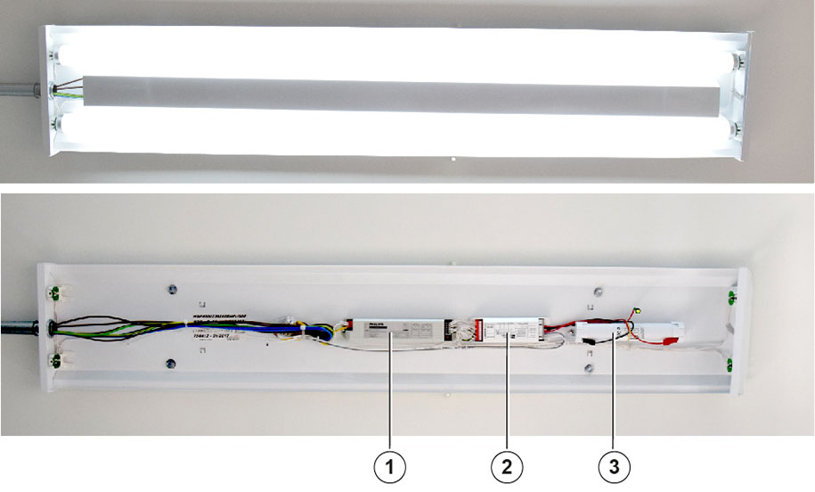

The internal light provides sufficient light within the ground
shelter.
In the SIE shelter two pieces of internal light with battery backup are
used. The main components of internal lights are shown in
Figure 1.
Figure 1. Internal
light - with / without fluorescent tubes

- 1
- Electronic Ballast
- 2
- Isolating Transformer/Battery Charger
- 3
- Battery
Trouble: The internal
light may not operate as a result of missing electrical power (tripped circuit
breaker or blown fuse), a defective light bulb or a defective electronic
ballast.